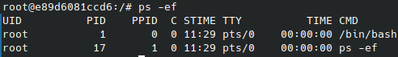

Tutorial Básico de Docker
Baseada nas video aulas do usuário do youtube LINUXtips.
Primeiro é preciso verificar se o Kernel do seu linux é 3.8. Veja isso digitando no terminal uname -r
Instalar o Docker.
Iniciar o Docker: /etc/init.d/docker start
Checar se o Docker está funcionando: ps -ef | grep docker
- grep = procura por trechos de texto (strings) dentro de arquivos ou diretórios e retorna para você em quais arquivos a string foi encontrada, inclusive mostrando a linha em que isso ocorreu.
Informa os containers que estão rodando no momento: docker ps
Entendendo as saídas do 'docker ps':
- CONTAINER ID: identificação do container
- IMAGE: imagem que o container está utilizando
- COMMAND: qual o comando que o container está executando
- CREATED: há quanto tempo o container foi criado
- STATUS: identifica há quanto tempo ele está executando
- PORTS: a porta em que a imagem está sendo executada
- NAMES: nome do container
Ver as imagens que estão na máquina: docker images
Criando um container ubuntu: docker run -i -t ubuntu:14.10 /bin/bash
- Mais sobre esse tópico: ubuntu:14.10 /bin/bash (distro:versão comando-a-ser-executado)
Após fazer o download o sistema já estará rodando noutra máquina, você pode verificar isso através do comando cat /etc/issue
- OBS: lembrando que ainda se trata de um container, ou seja, não possui kernel próprio, nem bibliotecas, nem binários, ele utiliza os da máquina host onde o docker foi instalado..
Ver processos sendo executados pelo container: ps -ef
SAIR DO CONTAINER:
- CUIDADO, ao clicar ctrl+d, você irá encerrar o container. Para sair do container, mas deixá-lo ativo, você digita ctrl+p+q.
- Você pode checar se o container ainda está rodando e que você apenas saiu dele é só digitar no terminal 'docker ps'
- Para voltar ao container digite: docker attach CONTAINER-ID
Verificando as alterações feitas no container: docker diff CONTAINER-ID
Exemplo 1
Criar um container de um web server (NGINX), que irá exibir uma página mostrando que o programa funciona.Vamos lá!
- Criar o container: docker run -i -t -p 8080:80 ubuntu:14.10 /bin/bash
- -p == porta
- 8080 = porta da máquina física (host)
- 80 = porta do container
Dessa forma, pegaremos a porta 80 do container que irá expor essa porta na porta 8080 do ip da máquina (host). Com isso, acessando num browser, ao digitar 8080 irá exibir a página do web server que estará instalada no container rodando na porta 80 do container.
- Instalar o NGINX: apt-get install nginx
- Para ver os processos funcionando: ps -ef
- Iniciar o NGINX: /etc/init.d/nginx start
- OBS: pela minha máquina não consegui inslar inicialmente, pois o container estava com problemas com o apt-get update. Resolvi através desse link.
- Podemos ver os processos do nginx através do comando: ps -ef
- Verificando se a porta 80 está 'escutando' (LISTEN) no container: netstat -atunp
- Saia do container sem desligá-lo: ctrl+p+q
- Vá ao seu browser e digite SEU-IP:8080. Irá aparecer no broser a seguinte página:
- Se digitarmos docker diff CONTAINER-ID iremos perceber que foram feitas várias alterações no container. Se fecharmos com ctrl+d tudo que foi alterado será perdido. Para evitar isso vamos fazer um commit nessas modificações, criando uma imagem desse container. Para fazer isso vamos digitar docker commit CONTAINER-ID NOME_QUE_VOCE_DARA_A_IMAGEM/TITULO_E_VERSÃO
- No caso do exemplo, ficará assim: docker commit ff4e50247633 maria/nginx-ubuntu:1.0
- Podemos checar a imagem 'commitada' usando o comando docker images
Exemplo 2: criar um segundo container
Agora iremos um segundo container NGINX usando outra porta no host (6660) para a porta 80 do container. Vamos lá!
- Suba o novo container com: docker run -i -t -p 6660:80 maria/nginx-ubuntu:1.0 /bin/bash
- Inicie o nginx: /etc/init.d/nginx start
- Cheque se o nginx está sendo executado: ps -ef
- Saia do container com ctrl+p+q
- Verifique se a imagem está listada: docker ps
- Vá ao browser e digite SEU-IP:6660. Irá aparecer a página do nginx respectiva a esse container que criamos.
Se quisermos checar se realmente os acessos a página estão ocorrendo fazemos:
- Acesse o container: docker attach CONTAINER-ID
- No meu caso, esse comando não funcionou, o container travava, consegui rodar o container digitando: docker run -it IMAGE-NOME (docker run -it maria/nginx-ubuntu:1.0
- Ajeitar essa parte, pois o comando run na verdade cria um novo container e a ideia é abrir um container já existente.OBS: resolvido aqui.
- Veja o log de acessos ao container: tail -f /var/log/nginx/access.log
Por fim, se queremos parar um container: docker stop CONTAINER-ID
Lembrando que sempre que quisermos abrir o container podemos fazer: docker run -ti IMAGE-NOME /bin/bash
Alguns Comandos:
docker exec
Usado quando quisermos usar um comando dentro do container. Exemplos:
- docker exec CONTAINER-ID ps -ef
- Parando o nginx do container (caso exista): docker exec CONTAINER-ID /etc/init.d/nginx stop
- Iniciando o nginx: docker exec CONTAINER-ID /etc/init.d/nginx start
docker inspect
Permite ver detalhes sobre o container em execução.
docker inspect CONTAINER-ID
Com eles podemos ver o IP do container, as portas, a data em que o container foi criado, entre outras informações.
Ver a tela de boas vindas do nginx
Pegue o ip encontrado no docker inspect. Digite: curl NUMERO-IP:80
Ou então pegue o ip do ifconfig. Digite: curl NUMERO-IP:8080
docker stats
Verifica o quanto o container está consumindo de CPU, memória e rede, se está sobrecarregando o host, etc
docker stats CONTAINER-ID
docker stop
Parar o container
docker stop CONTAINER-ID
OBS: não irá remover o container, você pode reacessá-lo com: docker start CONTAINER-ID
docker rm
Exclui o container da máquina.
docker rm CONTAINER-ID
É importante que paremos o container (docker stop) antes de removê-lo. Se quisermos forçar um container em execução a ser excluído, fazemos: docker rm -f CONTAINER-ID
docker rmi
Exclui a imagem do hd.
docker rmi IMAGE-ID
Antes:
Depois:
Se a imagem estiver em execução será preciso forçar: docker rmi -f IMAGE-ID
Fazendo dois containers se comunicarem
docker run -it --name web2 --link CONTAINER-NAME:web1 REPOSITORY:TAG
- -it: interação + terminal
No caso dos containers escolhidos por mim serão
Às vezes não dará erro para criar algum container com um nome já usado antes, para isso, podemos remover em lote todos os containers não utilizado de uma só vez: docker container prune (caso deseje forçar a exclusão, insira -f)
Para listar todos os conteineres não utilizados: docker container ls -a --filter status=exited --filter status=created
Criando imagens de container com Dockerfiles
Arquivo onde você coloca cada passo na criação de uma imagem de container. Lembra o makefile do linux.
Por exemplo, se queremos usar uma imagem do Apache já no Dockerhub (na internet) e vamos imaginar que queremos colocar os arquivos do seu site dentro dessa imagem de container junto com suas configurações personalizadas. A melhor forma é criando um Dockerfile, que irá permitir criar uma imagem personalizada. Sabendo disso, vamos montar nosso Dockerfile.
- Crie um diretório de nome Dockerfile: mkdir Dockerfile
- Procure a pasta Dockerfile: cd Dockerfile
- Crie o diretório Apache: mkdir apache
- Importante: só é possível criar um Dockerfile por diretório.
- Dentro do diretório do apache digite: vim Dockerfile
- A primeira linha do Dockerfile é o FROM, que contem a imagem base que você vai utilizar para criar essa outra imagem.
- No nosso caso será: FROM ubuntu:14.04
- Próxima linha MAINTAINER: nome de quem criou o dockerfile
- No nosso caso será: MAINTAINER maria@email.com
- OBS: MAINTAINER é uma label depreciada. O novo formato é LABEL mantainer="nome"
- Próxima linha RUN: comando que se deseja executar
- No nosso caso será: RUN apt-get update && apt-get install -y apache2 &&apt-get clean
- apt-get update: atualiza a lista de diretórios.
- -y: significa YES, é preciso usá-lo, para que confirme automaticamente a instalação do pacote.
- clean: limpa todos os pacotes durante a instalação, para deixar o container bem enxuto.
- OBS: para salvar e sair do VIM: esc+esc, depois :wq
Construindo a imagem através do dockerfile (build)
IMPORTANTE: é preciso estar no diretório do dockerfile. Podemos checar isso vendo o caminho (path) atual com 'pwd' no terminal e depois pedindo para listar os arquivos com 'ls'. Se o arquivo existe irá aparecer listado ('Dockerfile'). Agora vamos lá! Criando a imagem:
- Criando a imagem: docker build .
- . = representa o nosso diretório atual.
- Confirmando que a imagem foi criada: docker images
Perceba que não existe o nome do repositório nem a tag, e precisamos dessas informações para fazer o seu gerenciamento. Assim, quando fazemos o build, é melhor que já passemos esses parâmetros para facilitar a administração futura da imagem. Dessa forma, faremos assim:
- docker build -t maria/apache:1.0 .
- -t: tag
- maria/apache:1.0 = NOME-REPOSITÓRIO:VERSÃO
Dessa forma, quando digitarmos no terminar 'docker images', nossa imagem irá aparecer com os parâmetros apropriados:
Rodando o container que possui essa imagem
docker run -it maria/apache:1.0 /bin/bash
Digitando 'ps -ef' perceberemos que o apache não está rodando.

Para iniciar o apache faremos: /etc/init.d/apache2 start
Agora quando digitarmos 'ps -ef' veremos o apache listado:
Digite 'netstat -atunp' para checar se a porta 80 está disponível. Se está, o container está rodando o apache.
Checando se o apache está funcionando e exibindo mensagem de boas vindas:
Gerenciando CPU para container
Esse gerenciamento pode ser feito inclusive com o container em execução, devido ao comando UPDATE.
Limitando a memória do container
Primeiramente, vejamos quanta memória um container consome:
- Abra um container qualquer. No nosso caso, abriremos o container debian: docker run -ti debian /bin/bash
- Vejamos a memória do host completo e não só do container: free -m
- No meu caso, o container não possuía o comando 'free -m' disponível, resolvi instalando o procps: apt-get update && apt-get install procps
- Saia do container com ctrl+p+q
- Digite: docker inspect CONTAINER-ID | grep -i mem
- -i = serve para ignorar a procura de forma case sensitive.
O docker inspect trará informações sobre esse container. Vamos focar na linha 'Memory'. Nessa linha mostra o limite de memória do container. Se subirmos o container sem declarar nenhum limite, ele usará toda a memória disponível no root, ou seja, 0.
Para limitarmos a memória do container, podemos fazer um desses comandos:
- docker run -ti -m 512M debian /bin/bash
- docker run -ti --memory 512M debian /bin/bash
Quando sairmos do container e digitarmos 'docker inspect CONTAINER-ID | grep -i mem' veremos agora que a linha 'Memory" terá um valor delimitado de memória:
Se deseja checar se o valor está correto, vá no basic calculator do terminal digitando 'bc' e divida o número informado na 'Memory' por 1024/1024
Limitando a CPU
Limitar a CPU é um pouco diferente, por isso, vamos usar 3 containers nesses exemplos.
- Container 1: docker run -ti --cpu-shares 1024 debian /bin/bash
- Container 2: docker run -ti --cpu-shares 512 debian /bin/bash
- Container 3: docker run -ti --cpu-shares 512 debian /bin/bash